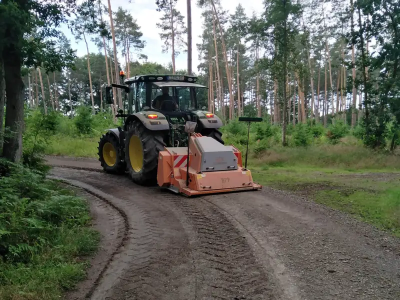
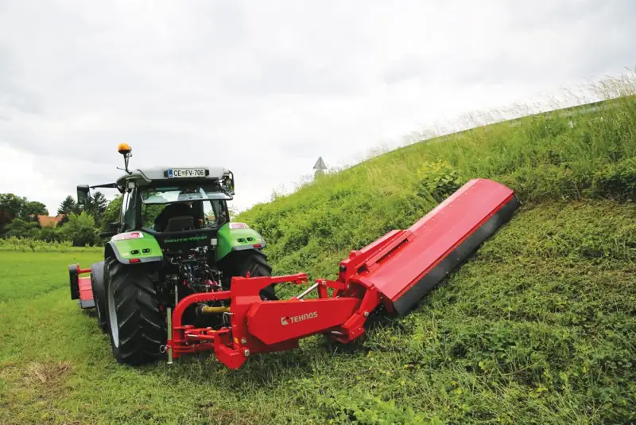
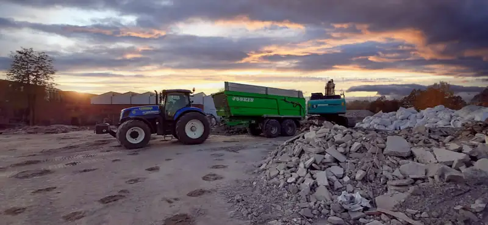

02 — Kommunal
Kommunale
Dienstleistungen
Wir machen den Weg frei.
Wir machen den Weg frei
Ob Schotterweg, Radweg oder Gewerbefläche: Wir bauen und pflegen Wege, halten Seitenränder frei, räumen Baufelder und übernehmen den Winterdienst – damit alle sicher ans Ziel kommen.

Wegebau
Schotter- und Sandwegebau, sowie Pflege- und Erneuerungsarbeiten.
Mehr erfahren
Seitenränder schlegeln
Beseitigung von Unkraut zur Pflege und Sicherung von Wegen.
Mehr erfahren
Winterdienst
Streu- und Räumarbeiten auf Wegen und Grundstücken.
Mehr erfahren
Baufeldräumung
Befreiung von Grundstücken von Störfaktoren mit der Fräse.
Mehr erfahren
Weitere Bereiche
Flächenvorbereitung, Kulturpflege, Holzrücken, Bäume kneifen, Hacken und Fräsen: Wir übernehmen die Arbeit auf Ihren Forstflächen – RAL-zertifiziert für Holzernte und Waldverjüngung, in ganz Niedersachsen.
03LandwirtschaftDüngung, Aussaat, Pflanzenschutz, Häckseln, Grünland und Transport: Wir sind auf Ihren Feldern in Niedersachsen unterwegs – für die Energie und Ernährung von morgen.
Kontaktieren Sie uns
Interessiert? Lassen Sie sich zu Ihrem Projekt beraten.
Noch Fragen? Schauen Sie in unsere FAQs oder wenden Sie sich an uns, um mehr über unser Dienstleistungsangebot und unsere Arbeitsweise zu erfahren.
Kontakt aufnehmen